/v1/images/edits. Output size is fixed at 512×512.
The 256 column is what the game actually does today (REFERENCE_SIZE in pipeline.py).
Total edit wall time: 7.22s.
| resolution | mean | median | min | max | stdev |
|---|---|---|---|---|---|
| ref 256×256 | 0.30s | 0.30s | 0.28s | 0.33s | 0.02s |
| ref 512×512 | 0.37s | 0.37s | 0.35s | 0.39s | 0.02s |
| ref 1024×1024 | 0.70s | 0.70s | 0.69s | 0.72s | 0.01s |
| mount sprite (input) | ride @ ref 256 | ride @ ref 512 | ride @ ref 1024 | |
|---|---|---|---|---|
horse a brown horse with a flowing mane and saddle LLM: A player sits atop a brown horse, its flowing mane billowing as they ride with the saddle secured beneath them. | 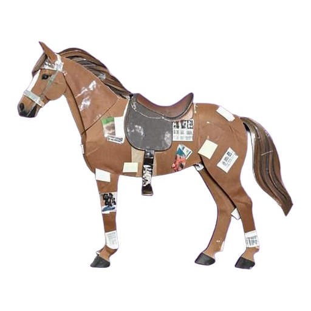 | 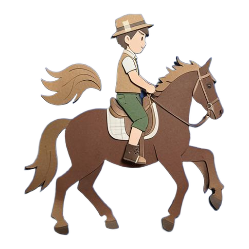 | 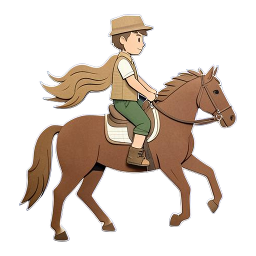 | 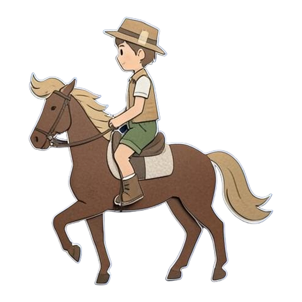 |
dragon a small green wyrm dragon with leathery wings and spiked tail LLM: The player sits atop the small green wyrm dragon, its leathery wings folded and spiked tail curling beneath them. | 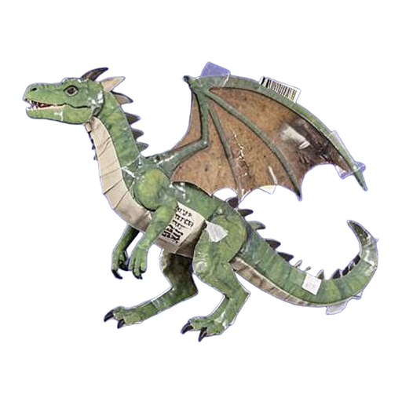 | 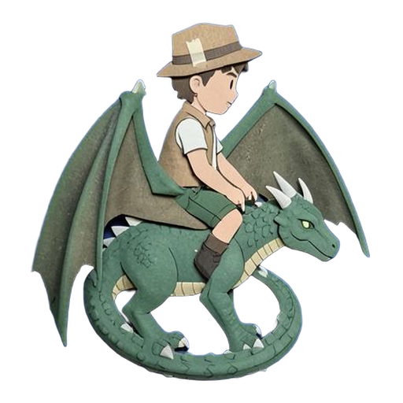 | 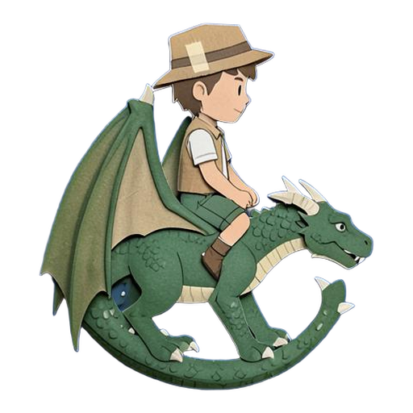 | 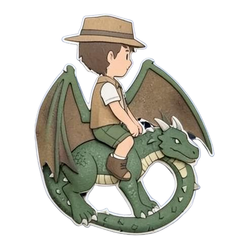 |
ostrich a large speckled racing ostrich with long pink legs LLM: A player rides atop a large, speckled racing ostrich with long pink legs. | 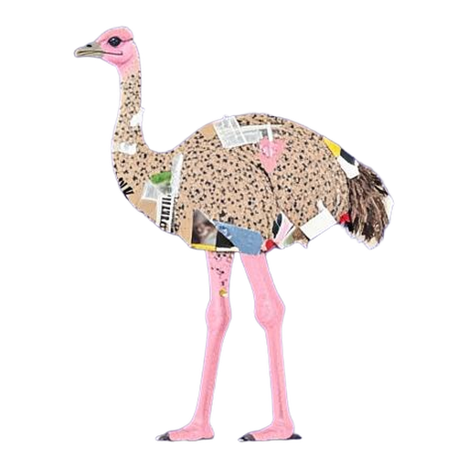 | 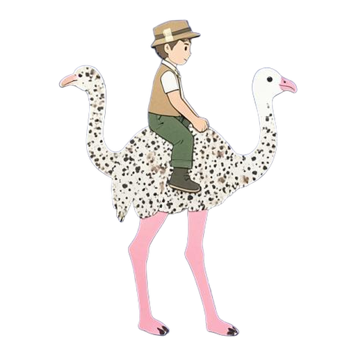 | 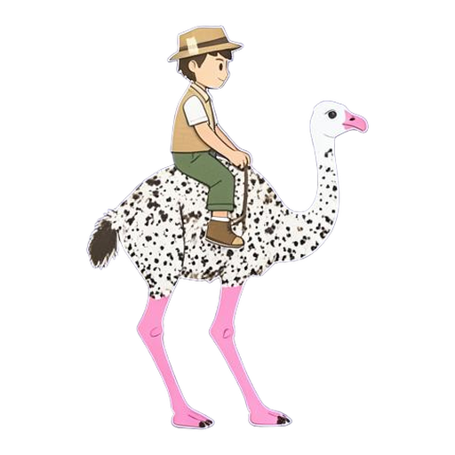 | 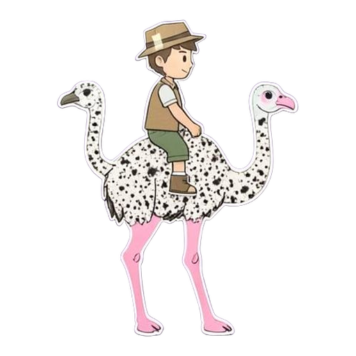 |
giant_spider a huge furry tarantula with eight thick legs and red eyes LLM: A player sits atop a giant, furry tarantula with eight thick legs and glowing red eyes. | 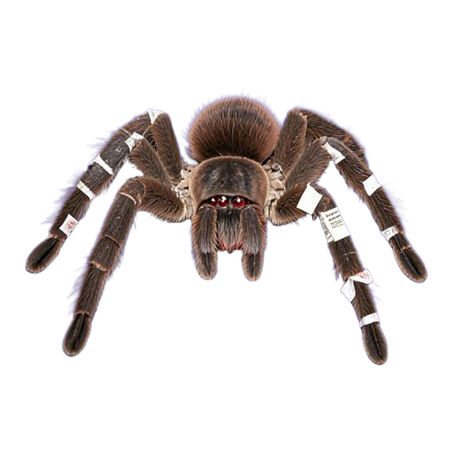 | 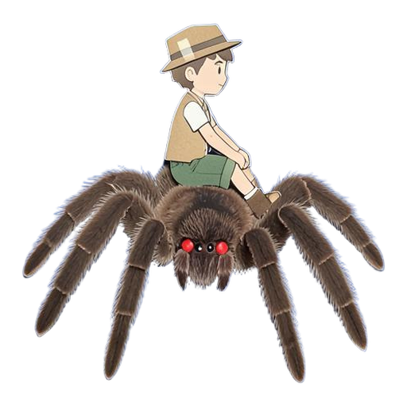 | 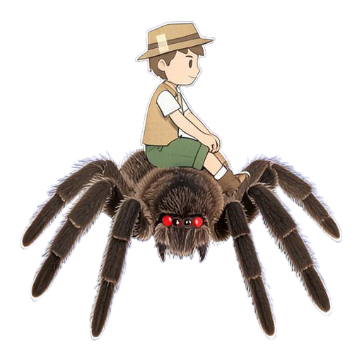 | 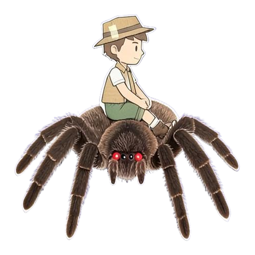 |
griffin a majestic golden griffin with eagle head and lion body LLM: A player sits atop a majestic golden griffin, its eagle head soaring above the lion's powerful body. | 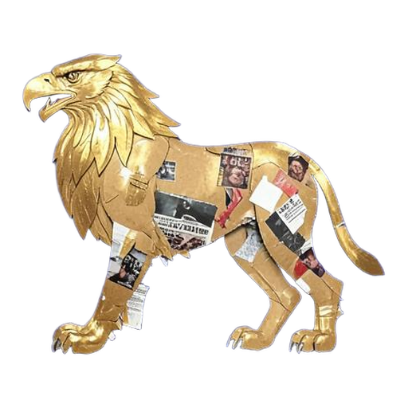 | 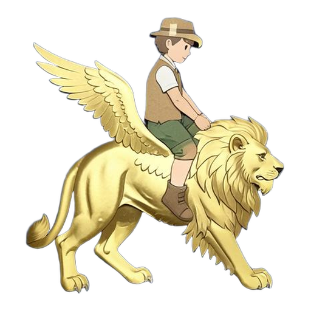 | 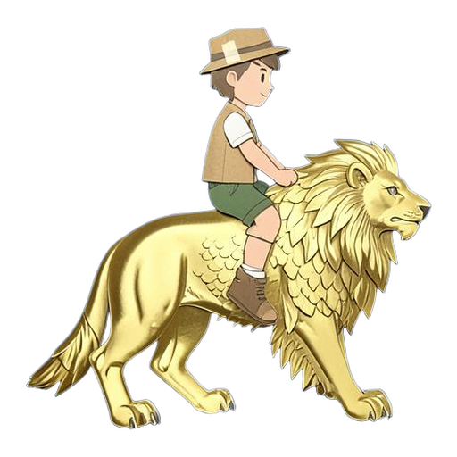 | 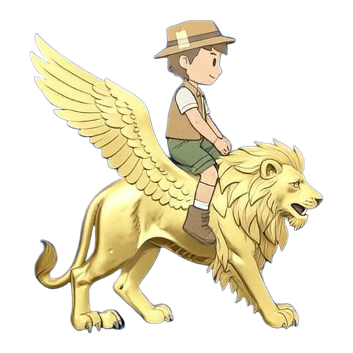 |